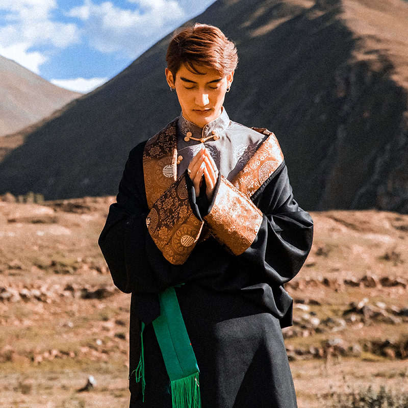
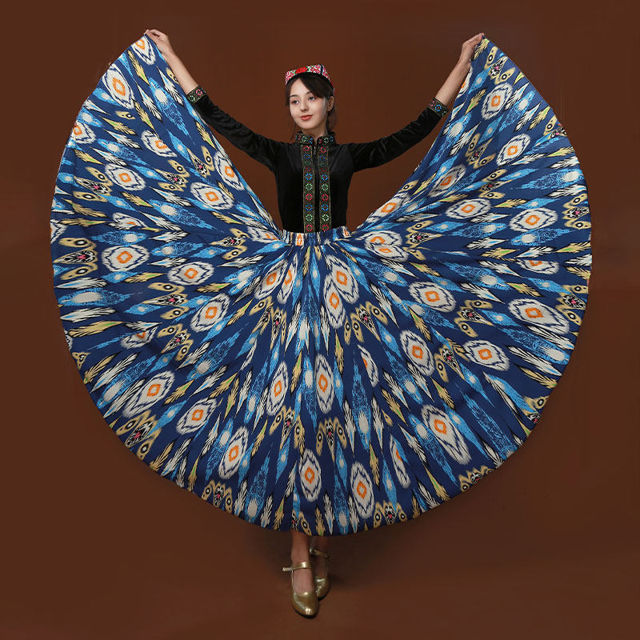
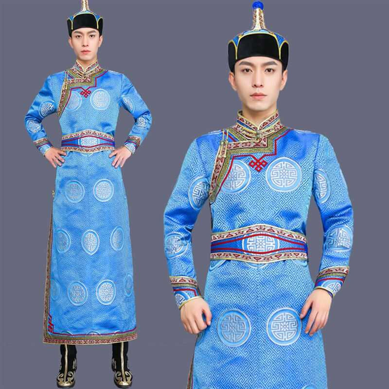
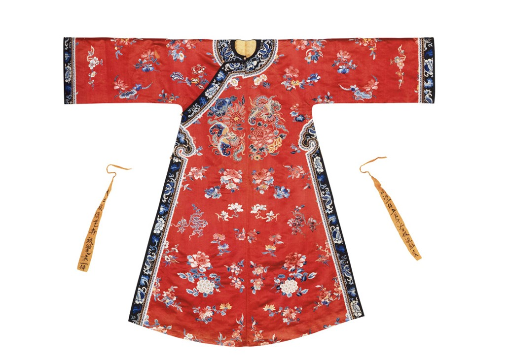
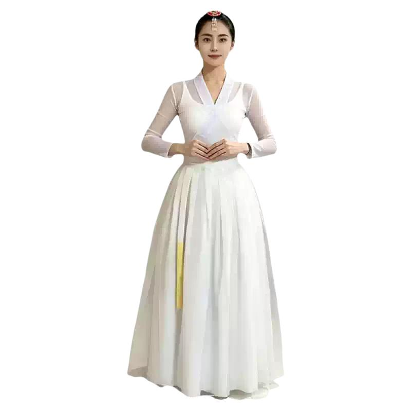

八区衣冠 · 从白山黑水到雪域高原
五十六个民族的服饰并非孤立的标本，而是与山地、草原、绿洲、海岛各自相依的生活美学。按文化地理划分为八大区域，每一区都有相近的材质、剪裁与信仰底色。
经典鉴赏 · 八服入画
八组最具辨识度的民族盛装，一窥织锦、刺绣、银饰与扎染的华彩。





五十六个民族的服饰档案
输入关键词或按区域筛选，点击任意卡片查看该民族的服饰详解：女装、男装、图案寓意、标志配饰与代表工艺。
说明：同一民族在不同支系、不同地区的服饰差异显著，档案以最具代表性的一地样式作概述。点击卡片可查看详解。
从色彩到款式：读懂民族服饰的设计语言
民族服饰的美，落在四个层次：色彩寄寓情感，图案书写信仰，工艺决定质感，款式呼应生活。理解这套语言，是当代设计转化民族元素的起点。
色彩语言
每一种主色背后，都是一方水土与一群人的价值取向。
图案符号
衣上的纹样不是装饰，而是可以阅读的"无声史书"。
龙与瑞兽
汉、满、畲等民族绣于袍服与门帘，寓意权威、吉祥与护佑，是最高等级的祝福符号。
花鸟草木
山茶、石榴、孔雀、阳雀……自然万物皆可入衣，寄托丰饶与生命的祈愿。
日月星辰
彝族火纹、纳西七星披肩、瑶族日月纹，把先民对宇宙的想象穿在身上。
山水梯田
哈尼族梯田纹层层叠叠，把家园与劳作织进衣间，是"大地美学"的典范。
几何回纹
壮锦、黎锦、土家西兰卡普的八勾与回纹，以秩序与节奏构成视觉韵律。
吉祥文字
福寿万字、水书文字、龙纹"寿"字，以衣为书，把祝愿穿进日常。
传统工艺
十二类代表性工艺，构成民族服饰质感与价值的根基。
以针代笔、以线作画，苗绣、羌绣、苏绣各成体系，是流传最广的衣上艺术。
苗族 · 羌族以蜡封色、入靛染蓝，蜡裂之处开出冰裂纹，蓝白相生。
布依族 · 苗族扎结成花、浸染成形，拆开线结的一刻，独一无二的纹样随之显现。
白族 · 维吾尔族经线纬线交织出华彩，壮锦、黎锦、傣锦与西兰卡普各有母题。
壮族 · 黎族 · 土家族千锤百炼、錾刻成型，银角、银项圈与银锁在光下流转。
苗族 · 侗族布条盘结成纽，一粒扣便是袖间一朵小花，是中式服装的标志细节。
满族 · 汉族高原羊毛织成的毛料，厚实保暖，是藏袍与邦典的衣料基础。
藏族 · 门巴族以马尾裹丝线盘绣，质地坚韧、纹理立体，水族独有。
水族两针两线密密盘绕，针脚细密如织，色彩如彩虹落衣。
土族依布纹数纱起针，针脚规整、图案对称，朴素中见匠心。
瑶族 · 羌族取鲢鳇鱼皮鞣软缝衣，三江平原的独特衣艺，耐磨防水。
赫哲族狍皮、鹿皮鞣制缝缀，帽靴衣裤一体，是森林猎人的生存智慧。
鄂伦春族 · 鄂温克族款式结构
从整体形制看民族服饰，可归为五大类型。
藏袍、蒙古袍、满族长袍：一袍多用，束带成衣，衣身宽大而功能丰富。
百褶裙、筒裙、布拉吉：裙摆的长短与褶数，常是年龄与身份的无声语言。
对襟、大襟短衣配长裤：轻便利落，适配山地劳作与日常起居。
查尔瓦、独龙毯、七星披肩：整幅织物披挂于身，保暖亦成风景。
旗头、多帕、盖头、银冠：头顶之上，藏着家族、婚否与信仰的全部信息。
从田野到秀场：民族元素的设计工作流
尊重传统，不是照搬符号，而是理解其生成逻辑后的再创造。
走进村寨与田野，记录服饰的色彩、纹样、结构与真实穿着场景。
从刺绣与织锦中提炼母题，归纳配色比例、构图秩序与工艺肌理。
结合现代廓形与面料语言，让传统元素在新语境中获得新生。
成衣、文创、舞台与数字内容，让民族之美被更多人日常看见。
一部可以翻阅的衣冠图鉴
本站为民族服饰科普展示网站，希望为传统文化爱好者与学生提供一扇了解民族服饰的窗口。
内容说明
民族服饰如同方言，一个民族内部往往还有数十种支系样式。本站在保证信息真实可查的前提下，选取最具代表性的一地样式进行概述，未覆盖全部支系差异。
- 五十六个民族的档案与分布信息整理自公开资料；
- 色彩、图案与工艺讲解为通识性梳理，方便入门阅读；
- 经典鉴赏图片来自网络公开图源，仅用于学习展示，版权归原作者所有。
如何使用本图鉴
先从区域分布建立整体印象，再进入民族服饰库检索具体民族；想深入了解设计逻辑，可阅读设计讲解与工作流章节。
- 搜索支持民族名、分布地与工艺关键词；
- 点击任意卡片可查看该民族的服饰详解；
- 适合作为课程资料、设计调研与文化科普的起点。